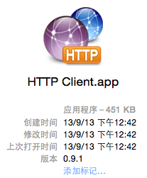
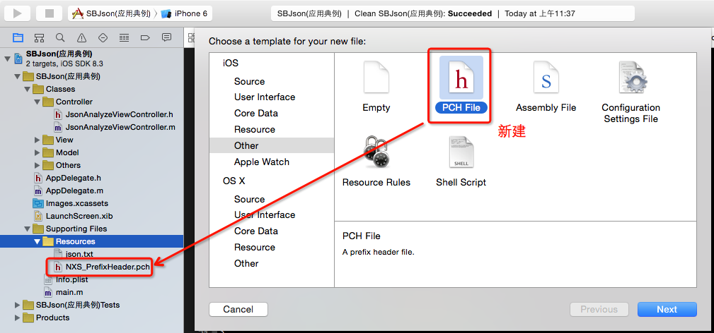
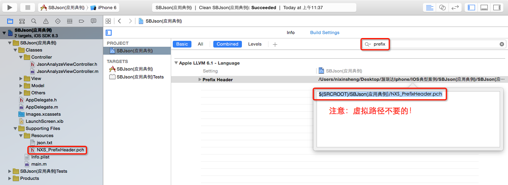
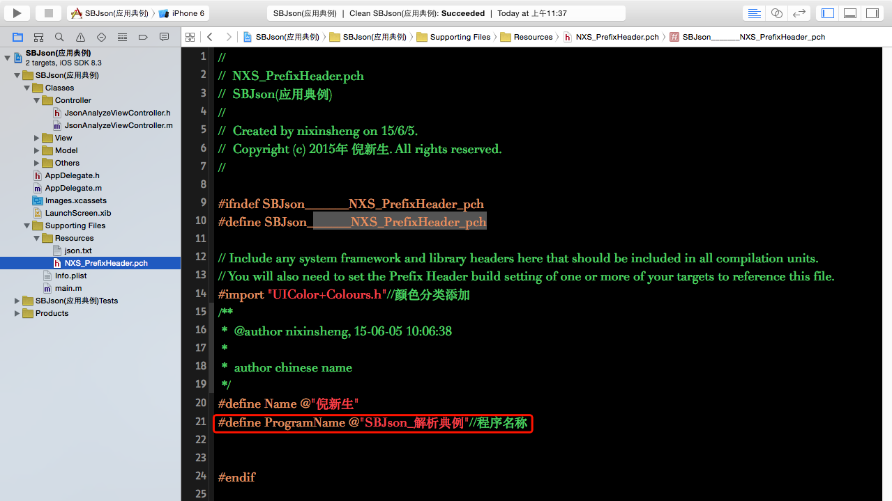
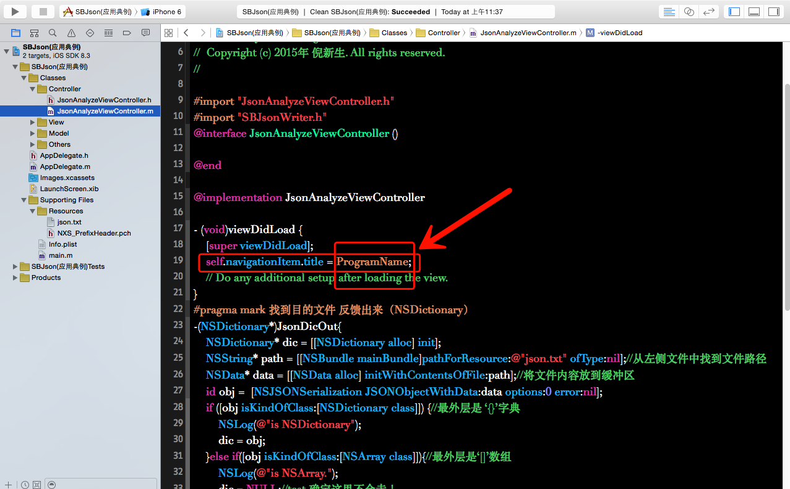
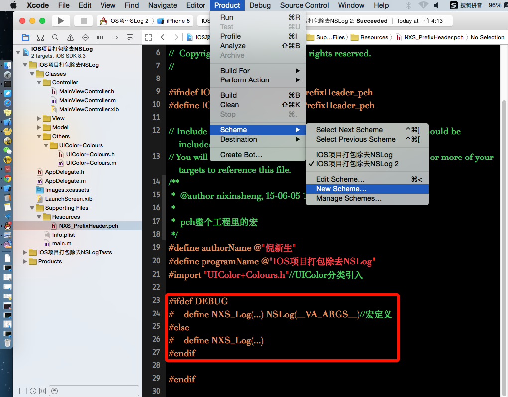
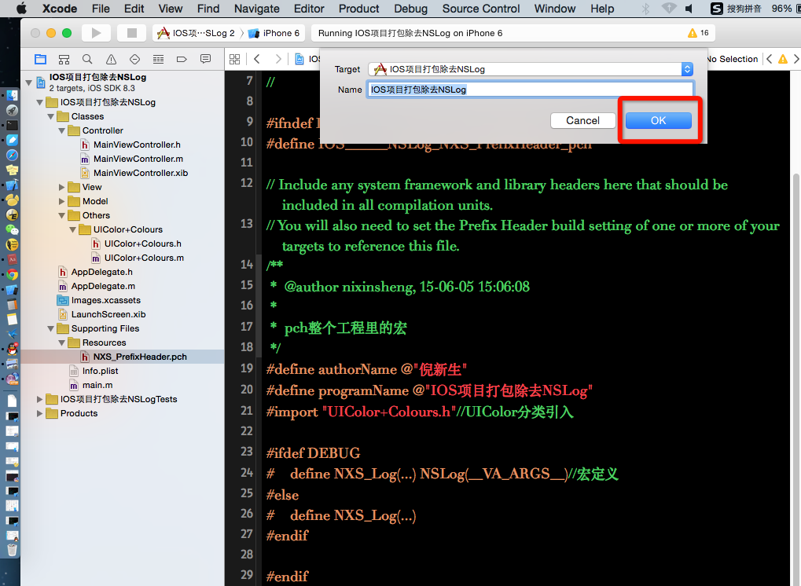
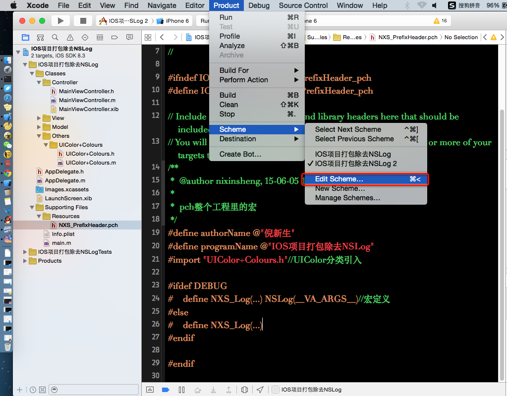
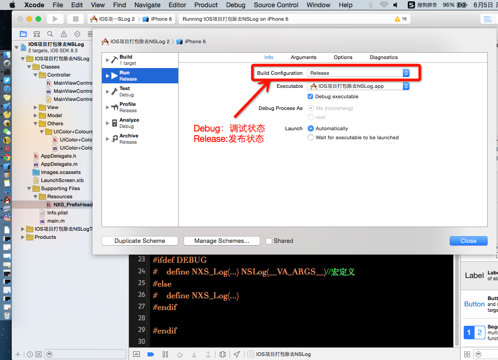

1、
tool Name：HTTP Client.app
LocalAddress:(本地上的文件详细路径的方式：打开终端/把目的文件直接拉进终端里就会有详细本机上的路径)
Last login: Thu Jun 4 08:55:58 on console
nixinshengdeMacBook-Pro:~ nixinsheng$ /Users/nixinsheng/Desktop/渥瑞达Iphone/IOS\~项目/云笔记项目-Project-IOS/HTTP\ Client.app

duty:查询有什么用处？
——————————————————————————————
2、sbjson 解析
duty:自己写demo例子作为练习
完成！
——————————————————————————————
3、IOS Debugging
duty:自己写demo例子作为练习
——————————————————————————————
4、IOS PrefixHeader
duty:自己写demo例子作为练习


prefix
$(SRCROOT)/SBJson(应用典例)/NXS_PrefixHeader.pch


完成
——————————————————————————————
5、IOS项目完成去除NSLog
duty:自己写demo例子作为练习

直接点击OK 就有另外一个版本了



——————————————————————————————
6、ASIHttpRequest简介.pdf
nixinshengdeMacBook-Pro:~ nixinsheng$ /Users/nixinsheng/Desktop/渥瑞达Iphone/IOS典型案例/ASIHTTP（典型案例）/ASIHttpRequest简介.pdf
——————————————————————————————
7、
——————————————————————————————
8、
——————————————————————————————
9、
——————————————————————————————
10、
——————————————————————————————